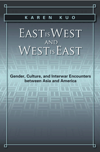

<body bgcolor="#FFFFFF" text="#000000" link="#0000FF" vlink="#CC0000" alink="#CC0000"><center><hr width="350" size="1" align="center" noshade>How race, gender, and sexuality were reimagined in the interwar encounters of Asians and Americans<hr width="350" size="1" align="center" noshade><p><a href="https://cdcshoppingcart.uchicago.edu/Cart/ChicagoBook.aspx?ISBN=9781439905869&&PRESS=temple" target="_top">Buy this book!</a> | <a href="https://cdcshoppingcart.uchicago.edu/Cart/Cart.aspx?PRESS=temple" target="_top">View Cart</a> | <a href="https://cdcshoppingcart.uchicago.edu/Cart/Cart.aspx?PRESS=temple" target="_top">Check Out</a></p><p></p></center><!--none//--><h1>East Is West and West Is East</h1>
<H2>Gender, Culture, and Interwar Encounters between Asia and America</H2>
<h3>Karen Kuo</h3>
<P>cloth 1-4399-0586-X $75.50, Oct 12, <FONT COLOR=#990033>Available</FONT>
<br>paper 1-4399-0587-8 $27.95, Oct 12, <FONT COLOR=#990033>Available</FONT>
<br>Electronic Book 1-4399-0588-6 $27.95 <FONT COLOR=#990033>Available</FONT>
<BR> 248 pp
5.5x8.5
2&nbsp;halftones
</P><BLOCKQUOTE><I>"</I>East is West and West Is East<I> provides an engaging and nuanced analysis of film and literature from the 1930s that staged racialized encounters between Asia and the U.S. through vexed and often ambivalent articulations of gender, sexuality, and nation. Kuo makes an important intervention in American historical studies of racial formations through her attention to how gender shapes and contests racialized boundaries as well as in her foregrounding of the centrality of race to the anxieties and desires that structure expressions of modernity."</I><br>&#151<b>Wendy Kozol</b>, Professor of Comparative American Studies at Oberlin College</I></BLOCKQUOTE>
<P>Between 1919-1938, contact between Asia and America forced a reassessment of the normative boundaries of race, sex, gender, class, home, and nation. Karen Kuo's provocative <i>East Is West and West Is East</i> looks closely at these global shifts to modernity.
<P>In her analysis of five forgotten texts&#8212;the 1930 film <i>East Is West</i>, Frank Capra's 1937 version of <i>Lost Horizon</i> and its 1973 remake, Younghill Kang's novel <i>East Goes West</i>, and Baroness Ishimoto's memoir/manifesto, <i>Facing Both Ways</i>&#8212;Kuo elucidates how "Asia" played a role in shaping American gender and racial identities and how Asian authors understood modern America and its social, political, and cultural influence on Asia.
<P>Kuo asserts that while notions of white and Asian racial difference remain salient, sexual and gendered constructions of Asians and whites were at times about similarity and intersections as much as they were about establishing differences.
<BR>&nbsp;<h2>Excerpt</h2><P>Excerpt available at <a href="http://www.temple.edu/tempress">www.temple.edu/tempress</a></p>
<BR>&nbsp;<h2>Reviews</h2>
<p><I>"Long overdue, </I>East is West and West Is East<I> arrests an important era of cultural production by, about, and in relation to Asian Americans in the early part of the twentieth century. Kuo argues for the importance of analyzing how Asia and America look at each other and in so doing, frame their own gendered and racial subjectivities and national identities by what the other is not. The argument is convincing and necessary; a timely work that helps us understand today's encounters between these subjects-both peoples and nations."</I> <br>&#151<b>Celine Parre&#241;as Shimizu</b>, Associate Professor of Asian American, Feminist and Film and Media Studies at the University of California, Santa Barbara
<p><i>"Kuo�s book is a distinctive and important contribution to Asian diaspora and Asian American cultural studies focusing on the first half of the twentieth century. Her analysis of historical figures and filmic and literary texts deepens the increasing transnational focus in Asian American studies and also overcomes some of the limitations of US-centered scholarship. At the same time, Kuo embeds her interpretations of iconic Japanese feminists and classic Asian American texts within American cultural, historical, and political contexts, illustrating the complex inter- and intranational discursive hegemony of that period."</I>
<br>&#151<b><I>MELUS</I></b>
<p><i>"</i>East Is West and West Is East<i> is ostensibly about gender and race issues in the interwar period, but the intrigue of the book is Karen Kuo�s insights into the development of American modernity. She argues persuasively that the United States used Asia as a 'proxy' for American crises of modernity by limiting Asians� ability to integrate into American society.... [I]t provides enough to allow scholars to uncover new ways of thinking about American modernity. She takes a sophisticated approach by studying females and males and by looking at the views and interactions of Asians and Americans.... innovative."</I>
<br>&#151<b><I>Journal of American History</I></b>
<p><i>"Within American studies and its various branches, much of the scholarship about sexual and other kinds of interracial encounters focuses on white American anxiety. Karen Kuo broadens our purview considerably. Her wonderfully astute study finds that even during the period when the United States prohibited Asian immigration, there were literary and filmic texts by and in which white and Asian Americans anticipated greater freedoms through intimate relationships across historical racial boundaries.... With scholarship like Kuo�s, Asian American studies continues to broaden the field of Americanist inquiry. Kuo�s focus on the ways in which the United States and Asia used each other as mirrors takes an important step."</I>
<br>&#151<b><I>Journal of Asian American Studies</I></b>
<p><i>"[Kuo] provides an analysis of the complex transnational dynamics of gender, race, class, and sexuality in literature and film.... [I]t is her illumination of these unresolved tensions and their importance that make this book a compelling piece of scholarship."</I>
<br>&#151<b><I>Pacific Historical Review</I></b>
<p><i>"[A] lively and erudite engagement with a range of cultural texts from the interwar period of the early twentieth century. From literature, to film, to autobiography, the reader is cogently guided from text to text with a range of historical and theoretical insights.... Kuo is at her best when she plumbs the depths of intersecting anxieties linked to multiple axes of identity, particularly gender, ethnicity, sexuality, and notions of national belonging. She connects individual stories of self to the transnational flows and exchanges that inform literary, cultural, and economic production.... Organizationally, the book is a highly teachable text for a range of undergraduate and graduate courses in cultural studies, Asian American studies, gender studies, literature and drama, and fits nicely into a growing body of work on American orientalism and transnational American and transpacific studies.... Her conclusion is a tour de force of synthesis and cultural analysis. But to reveal her forceful insights here would be to dilute her carefully argued coda. I leave it to readers to buy the book and mull over Kuo's fine work for themselves."</I>
<br>&#151<b><I>Journal of American Studies</I></b>
<BR>&nbsp;<h2>Contents</h2><P>
<p>Acknowledgments
<br>Introduction
<br>1. How Yellow and White Women Are Sold: Controlling Chinese and White Female Sexuality and the Making of US Domesticity in <i>East Is West</i>
<br>2. Masculine Racial Formations in Younghill Kang�s <i>East Goes West: The Making of an Oriental Yankee</i>
<br>3. Utopias Lost and Found: <i>Lost Horizon</i> and the Revitalization of American Masculinity
<br>4. Envisioning Feminism across the Pacific: Japanese and American Feminism and the Limits of Race in <i>Facing Two Ways</i>
<br>Conclusion
<br>Notes
<br>Bibliography
<br>Index</p>
</P><BR>&nbsp;<H2>About the Author(s)</H2>
<P><b>Karen Kuo</b> is an Assistant Professor of Asian Pacific American Studies in the School of Social Transformation at Arizona State University.</P>
<BR><H2>Subject Categories</H2>
<p><A HREF="/tempress/asian_amer.html" TARGET="_top">Asian American Studies</a>
<BR><A HREF="/tempress/gender.html" TARGET="_top">Gender Studies</a>
<BR><A HREF="/tempress/literature.html" TARGET="_top">Literature and Drama</a>
</p>
<BR><h2 class="inpageheading">In the series</H2>
<P><I><a href="http://www.temple.edu/tempress/asam_history.html" onMouseOver="window.status='Click for other books in this series!'; return true;" onMouseOut="window.status=''; return true;" target="_top">Asian American History and Culture</a></i>, edited by K. Scott Wong, Linda Trinh V�, and Cathy Schlund-Vials.
</p><p>Founded by Sucheng Chan in 1991, the <I>Asian American History and Culture</I>, series has sponsored innovative scholarship that has redefined, expanded, and advanced the field of Asian American studies while strengthening its links to related areas of scholarly inquiry and engaged critique. Like the field from which it emerged, the series remains rooted in the social sciences and humanities, encompassing multiple regions, formations, communities, and identities. Extending the vision of founding editor Sucheng Chan and emeriti editor Michael Omi and David Palumbo-Liu, series editors K. Scott Wong, Linda Trinh V�, and Cathy Schlund-Vials continue to develop a foundational collection that embodies a range of theoretical and methodological approaches to Asian American studies.</p>
<p align="center"><a href="https://cdcshoppingcart.uchicago.edu/Cart/ChicagoBook.aspx?ISBN=9781439905869&&PRESS=temple" target="_top">Buy this book!</a> | <a href="https://cdcshoppingcart.uchicago.edu/Cart/Cart.aspx?PRESS=temple" target="_top">View Cart</a> | <a href="https://cdcshoppingcart.uchicago.edu/Cart/Cart.aspx?PRESS=temple" target="_top">Check Out</a></p><p><font face="Arial" size="1"><a href="copyright.html" onMouseOver="window.status='Web Copyright Policy';return true;" onMouseOut="window.status=''" title="Web Copyright Policy">&copy;</a> 2015 <a href="http://www.temple.edu" target="new" onMouseOver="window.status='Link to Temple University home page';return true;" onMouseOut="window.status=''" title="Link to Temple University home page">Temple University</a>. All Rights Reserved. http://www.temple.edu/tempress/titles/2135_reg.html</font></p>